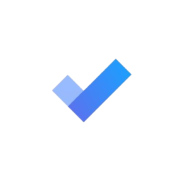
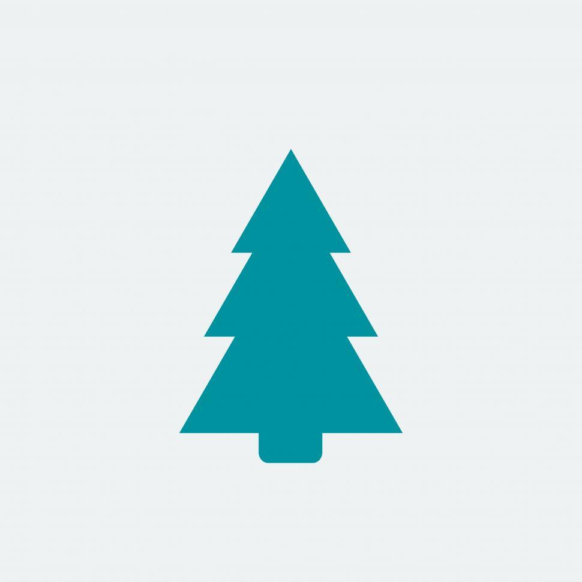

Welcome to our Productivity Toolbox!
Here are various apps and tools we recommend that can help you stay on task as well as offer more tips about how to effectively manage your self and be at the top of your game!
Task Management
Todoist
Microsoft To-Do
These are available as not only websites, but apps for your phone too! These apps can help you organize your work, schooling, and life in general. They are task manager and to-do list apps that help you stay on top of your life.
Focus Tools
Forest
Focus@Will
These are also both available as apps for your phone and as websites or browser applications. Forest is an app that offers a reminder to stay on track, and has a visual deterrent that helps you avoid getting distracted. Focus@Will takes a different approach and offers sounds that are scientifically shown to help focus.
Time Tracking
Toggl
Clockify
These apps can track the time that you spend on your devices and generate insightful reports on your usage. They are free for individuals and encourage accountability.